A 华为 IPD / EOX
公开生命周期策略：GA → EOM（停售）→ LODSP（备件最后买）→ EOS（停服），关键节点至少提前 6 个月公告。
- 学：停售、最后采购、停服、清库闭环不是同一天
- 不搬：ToB 长服务周期、官网对客合同义务
对标对象不是「另一套零售 EOM 工单」，而是三类可拆开的能力：华为 IPD/EOX 的分阶段里程碑、金蝶软件生命周期终止政策（EOM1/EOM3）及星空侧禁用/允许采购/ECN 用完旧料、SAP 停产件 + 物料状态的卡单与替代。学能力，不抄界面；卡单落在金蝶/供应链，GTM 出状态。
我司对象是 GTM 成品 8 位 SKU 退市工单，不是元器件 PCN，也不是用友「停销」台账。
公开生命周期策略：GA → EOM（停售）→ LODSP（备件最后买）→ EOS（停服），关键节点至少提前 6 个月公告。
两层能力分开看：官网「EOM」是金蝶卖软件的停售停服；星空物料禁用 / 允许采购 / 工程变更「用完旧料」才是卡单与旧料消耗的产品能力。
MRP4 停产标识 + 生效日 + 替代料；BOM 停产组/替代组；MD04 按库存耗尽切换需求；OMS4 状态可禁 PO、允许出库。
「强」指公开能力完整；「弱」指 2.0 方案已点到但未产品化或未接到交易系统。
| 能力 | 华为 EOX | 金蝶停售停服 / 星空 | SAP 停产/状态 | 我司 GTM EOM 2.0 | 建议 |
|---|---|---|---|---|---|
| 停售 ≠ 停服 ≠ 清库完结 | GA / EOM / LODSP / EOS 分里程碑 | GA → EOM1 停新购 → EOM3 停销售 → EOS1/EOS2 停服；订阅/买断两套轴 | Eff-out 生效日 + 库存耗尽才切替代 | 正式 EOM 后进入执行，库存=0 判闭环；售后截止几乎没有 | 本期学语义 |
| 提前公告 / 路标 | 至少提前 6 个月，官网生命周期公告 | 有版本提前 3–6 个月停售、无版本 12 个月；停服至少 6–12 个月；plc 公告可按大中小微筛选 | 主数据生效，不对客 | 工单协同与钉钉，无对外生命周期公告 | 对内日历即可 |
| Last Buy 数量怎么来 | 备件 LODSP，偏合同窗口 | 公开资料无建议采购量引擎；EOM1/EOM3 管「哪类订单停接」，不管买多少 | MRP 按库存切需求，不算零售清库量 | 方案填写 + 跟踪，缺少建议量公式 | 本期不从竞品搬 |
| 卡新采购、允许清货出库 | EOM 后不再接新建/扩容订单 | 停止销售日零点起不再接销售订单；星空不勾选允许采购 / 物料禁用 / ECN 用完旧料冻旧采 | OMS4：采购报错、库存移动放行；停产件仍可耗尽库存 | 口径已写「普通下单拦截、已批 Last Buy 放行」，卡单应在金蝶 | 本期定接口 |
| 替代 / 新品衔接 | 路标交流、新产品替换 | 公告写版本替代（如 V7.6→V9.1）；ECN「用完旧料」下推后新料主料、旧料替代料 | Follow-up + BOM 停产组/替代组 | SKU 上可填迭代新品、预计 CR / 上市；无主数据强制替代 | 工单字段保留 |
| 执行闭环 | EOS 后停服务 | 停服/停运维是软件生命周期终点；物料侧用完旧料、呆滞监控优先耗旧库存 | MD04 需求切到替代料 | 成品库存=0 闭环；反 EOM 追加 Last Buy | 保持 2.0 |
公开信与数字能源终止政策把 EOM 定义成「停止接受订单」，EOS 才是「停止服务」。
公开资料里金蝶没有零售成品 EOM 工单，也没有 Last Buy 建议量引擎。能对标的是两层：金蝶作为软件厂商的生命周期终止政策，以及金蝶云·星空里物料禁用、允许采购、工程变更「用完旧料」。
政策里还有 EOM2（停加模）、EOPR（停需求补丁）、EOSM（停维护）、EOO（公有云关环境）。订阅产品时间轴不含「停标服」节点，买断产品有。基准年限：订阅 GA–EOS2、买断 GA–EOS1 约 5 年（星空旗舰/星辰等无版本产品除外）。
| 能力 | 金蝶公开口径 | 对我司的翻译 |
|---|---|---|
| EOM1 停止新购 | 该日之后不再允许新购订单 | 接近「不再接普通新订单」，但仍可能加站/续费；比「正式 EOM」更早一档 |
| EOM3 停止销售 | 零点起不再接受销售订单；订阅含新购/加站/加模/续费及标准/高级成功服务，不含金选/专项 | 对齐我司「正式停售」：普通采购/接单停掉。已批 Last Buy、合同例外单独白名单，类似金蝶「不含金选服务」 |
| EOS1 / EOS2 | 停标服、停全部服务（含金选）；与停售日分开，往往晚 1–5 年 | 零售成品用「库存=0 闭环」，不要对齐软件停服。售后截止若以后要做，才对标这一层 |
| 提前通知 | 有版本停售提前 3–6 个月，无版本 12 个月；停服产品至少 12 个月、版本 6–12 个月；官网 plc 发布 | 学「固定提前窗口 + 可检索公告列表」。GTM 做对内台账即可，不做对客 plc |
| 版本替代 | 停售停服公告写明退出版本 → 迭代版本（如星空 V7.6/V7.7 → V9.1） | 对应工单「迭代新品 SKU」，让销售能查「停了卖什么」 |
| 物料禁用 / 允许采购、允许销售 | 禁后列表默认过滤、单据红字；不勾选允许采购则不能录采购价目表 | 正式 EOM 回写金蝶：禁普通采购、仍允许出库清货；Last Buy 走白名单，而不是整料物理删除 |
| 工程变更「用完旧料」 | 变更类型：立即变更 / 按日期变更 / 用完旧料。用完旧料下推后新料作主料、旧料作替代料并产生替代关系；按日期则旧料失效日=设定日 | 「先耗尽老库存再切新品」与 SAP Eff-out 同构。BOM/替代关系在金蝶，GTM 只出停售日与建议替代 SKU |
能力分两块：停产件（MRP 把需求转给 Follow-up）与物料状态（OMS4 决定 PO/SO/出库是否报错）。
下列结论供方案拍板；默认不回写需求正文，除非产品确认纳入。
| 来源 | 建议纳入本期 | 建议后期 | 明确不做 |
|---|---|---|---|
| A 华为 | 工单/台账拆「停售日、Last Buy 窗口、闭环日」；对内提前窗口（天数可短于 6 个月） | 对内生命周期查询（按 SKU 查停售/闭环） | 官网对客公告、EOFS、多年停服合同 |
| B 金蝶 | 工单语义对齐 EOM1/EOM3（停新购 vs 正式停售）；与金蝶约定禁普通 PO、允许出库、Last Buy 白名单 | ECN「用完旧料」与迭代新品 SKU 打通；对内按 SKU 查停售日/替代版本 | 官网 plc 对客公告、软件 5 年停服、EOM2 加模、在 GTM 做星空物料/ECN 台 |
| C SAP | 与金蝶约定：正式 EOM 状态禁普通 PO/SO，允许出库；Last Buy 标识放行 | Follow-up 主数据、BOM 停产组与 GTM 新品 SKU 打通 | 在 GTM 做 MRP、MD04、OMS4 配置台 |
每张图先写系统里是什么功能，再写对应到我司哪一段。金蝶截的是官网生命周期政策/公告和公开帮助手册；SAP GUI 来自 PortSAP 演示环境。
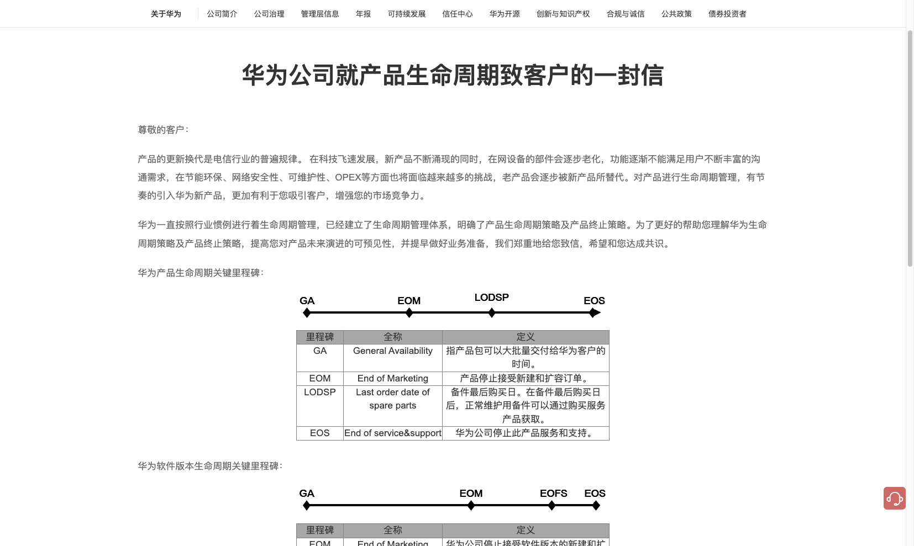
功能：用一条时间轴把产品从可交付到退出市场拆成四个节点。GA 是大批量可交付；EOM（End of Marketing）是停止接受新建和扩容订单；LODSP 是备件最后购买日，之后正常维护备件改走服务产品；EOS 是停止此产品的服务和支持。下方还有软件版本轴（EOM → EOFS 停新补丁 → EOS）。文中同时承诺：关键里程碑至少提前 6 个月，通过网站、邮件、电话通知。
对应我司：「正式 EOM」应对齐华为 EOM（停售），不要对齐 EOS。「Last Buy 窗口」接近 LODSP。「库存=0 闭环」是零售清库完结，不是停服。2.0 不需要 EOFS。
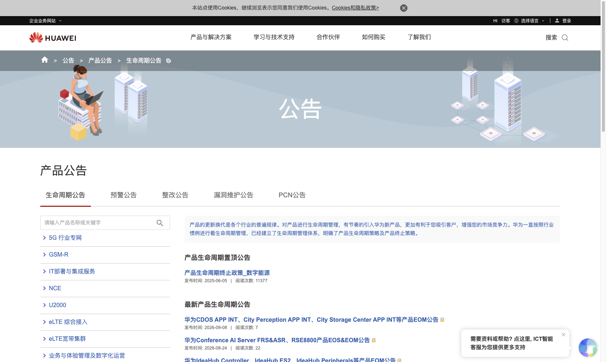
功能：把单产品的 EOM、EOS、EOFS 公告做成可检索列表。左侧按产品线筛选，右侧分「置顶政策」和「最新公告」，标题直接标明是 EOM、EOS 还是组合公告。同一站点还有预警、整改、漏洞、PCN 等并列栏目，说明生命周期公告是对客/对伙伴的正式通知渠道，而不是内部工单。
对应我司：学「按 SKU 能查到停售日」的可发现性，做成 GTM 台账/查询，而不是对外公告站。单条产品公告需登录，本报告用列表页证明能力存在。
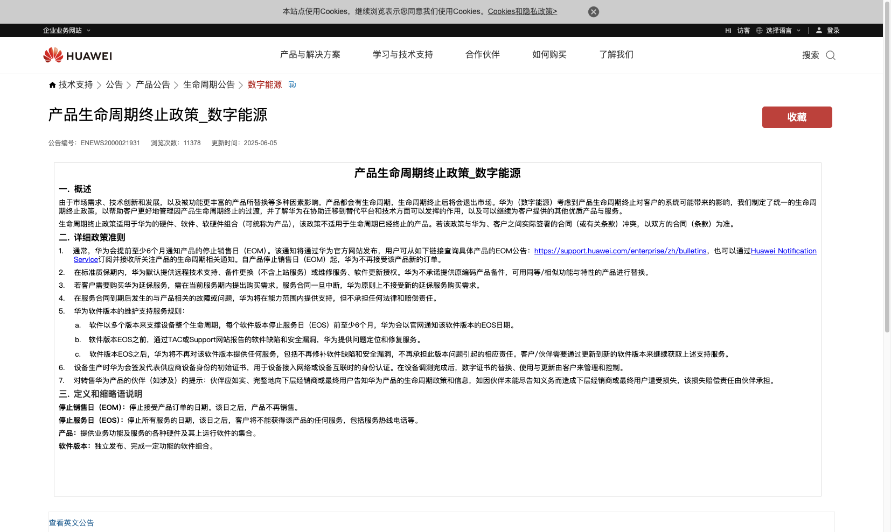
功能：把策略写成可执行规则：通常提前至少 6 个月通知停止销售日（EOM）；EOM 起不再接受该产品新订单；软件版本 EOS 前同样至少 6 个月官网通知；EOS 后不再修补缺陷和漏洞。文末定义：停止销售日（EOM）= 停止接受产品订单之日，该日之后产品不再销售；停止服务日（EOS）= 停止所有服务之日。政策还声明：若与已签合同冲突，以合同为准。
对应我司：正式 EOM 的业务动作是「普通订单不再接」，不是「库存立刻不能出」。合同/已批 Last Buy 属于白名单例外，和华为「合同优先」同一逻辑。
图 B-1～B-5 来自金蝶官网 plc；图 B-6 来自金蝶云公开帮助「工程变更单」。物料禁用 / 允许采购无公开实机 GUI，正文按社区/手册口径描述，不配界面图。
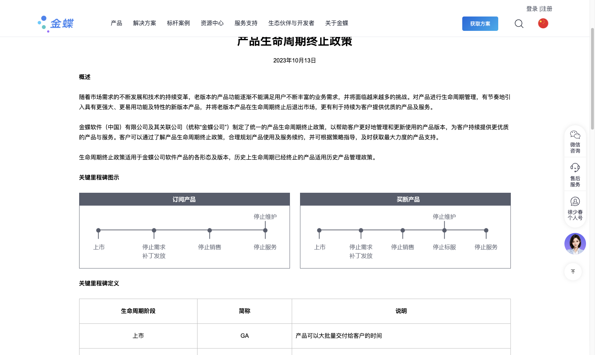
功能：把软件从上市到退出拆成两条轴。订阅产品：上市 → 停止需求补丁发放 → 停止销售 → 停止维护 → 停止服务。买断产品多一个「停止标服」，再进停止服务。停售和停服不在同一天，停维护是研发不再出错误/安全补丁。
对应我司：「正式 EOM」只对齐停止销售，不要对齐停止服务。零售清库用库存=0 闭环，不必上「停止维护/停止标服」。订阅/买断分轴启发：同一 SKU 也可以有「停新购」和「停全部销售」两档，而不必一次切死。
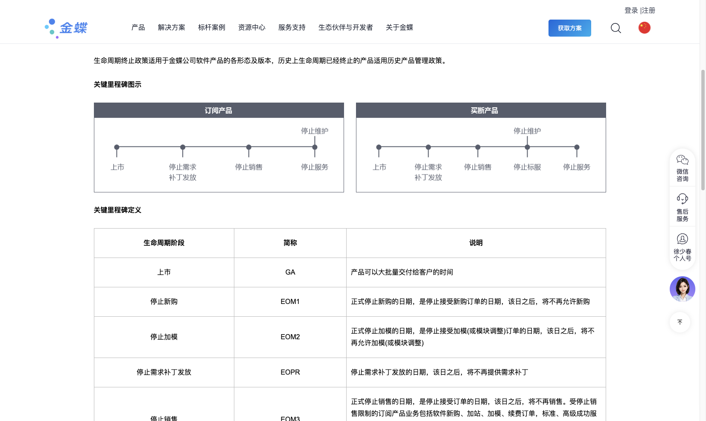
功能：金蝶把「EOM」写成三档。EOM1 停止新购：不再接受新购订单。EOM2 停止加模：不再接受加模或模块调整。EOM3 停止销售：不再接受销售订单；订阅还卡住加站、续费和标准/高级成功服务，买断则服务订单仍可走。另有 EOPR 停止需求补丁。政策正文还写：有版本提前 3–6 个月、无版本提前 12 个月通知停售；停止销售日零点起不再接单。
对应我司：学「停售可以分档」。我司正式 EOM 更接近 EOM3（普通订单不再接）。Last Buy / 已签合同类似政策里「不含金选/专项服务」的例外，应白名单放行，而不是再发明一档 EOM2（加模对零售 SKU 无对等）。
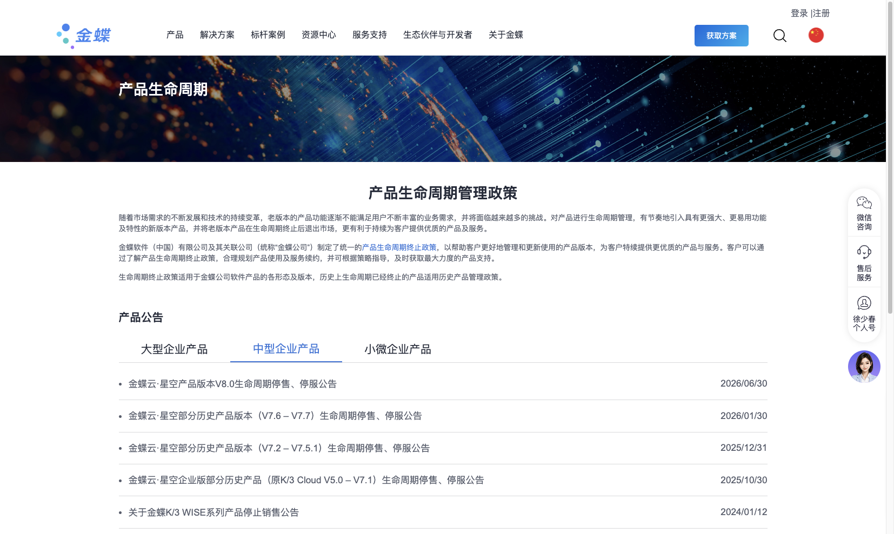
功能：政策页下面是可筛选的公告列表：大型 / 中型 / 小微。中型企业页可见星空 V8.0、V7.6–V7.7、V7.2–V7.5.1、原 K/3 Cloud V5.0–V7.1 以及 K/3 WISE 停售停服。标题直接写「生命周期停售、停服」，右侧是发布日。这是对客正式通知渠道，不是内部工单。
对应我司：学「按产品能查到停售日」的可发现性，做成 GTM 台账。不新建金蝶式官网公告站，也不承担伙伴告知义务。
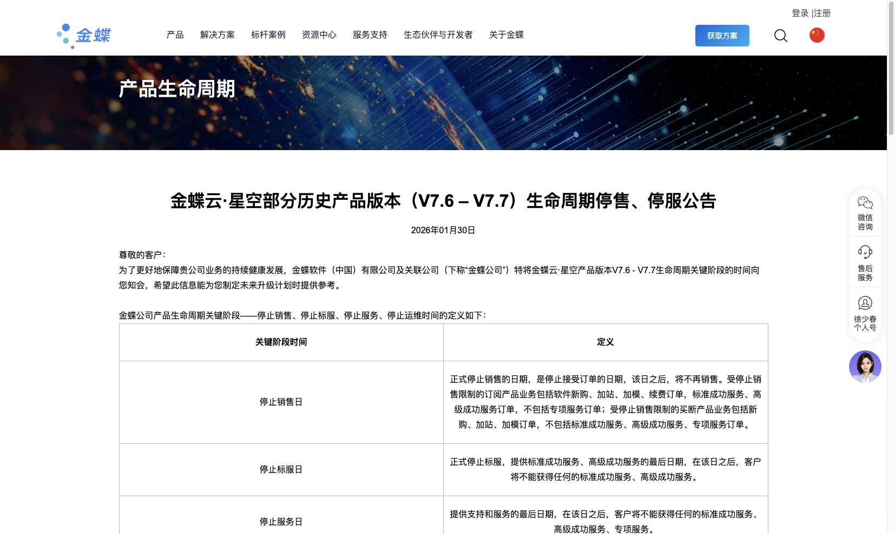
功能：公告开头先定义三个日期。停止销售日：停止接受订单之日，之后不再销售；订阅限制新购/加站/加模/续费及标准、高级成功服务，不含专项服务。停止标服日：标准/高级成功服务的最后一天。停止服务日：之后不能再获得标准、高级、专项服务。同一公告还定义停止运维日（公有云关环境）。
对应我司：正式 EOM 的业务动作是「普通订单不再接」，定义必须写进对内口径，而不是只写「已 EOM」。停标服/停服/停运维不要进 8 位 SKU 退市工单。
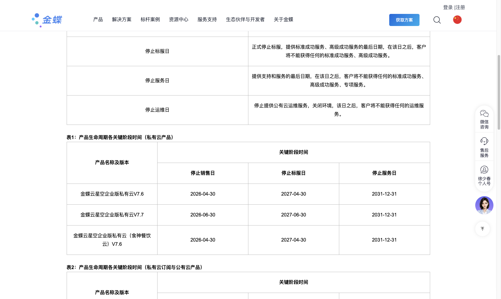
功能：把日历落到具体版本。例如星空企业版私有云 V7.6：停止销售 2026-04-30，停止标服 2027-04-30，停止服务 2031-12-31；V7.7 停售 2026-06-30，停标服 2027-06-30，停服同为 2031-12-31。停售之后仍可标服约 1 年，停服再晚数年。公告另有版本替代表（退出版本 → 金蝶云·星空 V9.1）。
对应我司：台账至少要能写下「停售日」；若有 Last Buy 窗口，应是停售后的独立日期，而不是和停售同一天。替代版本对应迭代新品 SKU。不要把「停售后仍服务 5 年」抄进零售清库承诺。
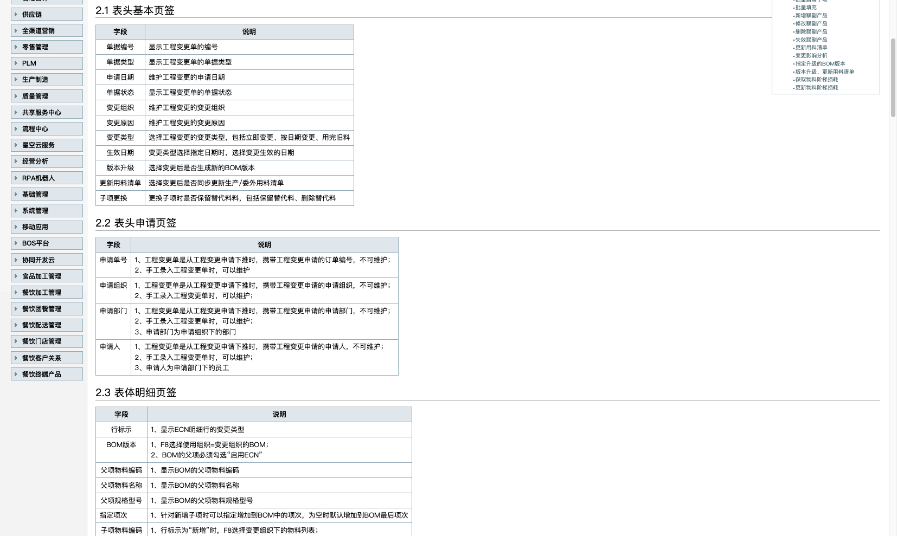
功能：路径【生产制造】→【工程数据】→【工程变更】→【工程变更单】。表头变更类型可选立即变更、按日期变更、用完旧料。按日期时填生效日期；子项更换可选择保留替代料或删除替代料。社区口径：用完旧料下推 ERP 后，新料成为主料、旧料成为替代料并产生替代关系；按日期则旧料失效日=设定日、新料生效日=设定日。这是执行侧「先吃光老料、再切新料」，不是软件停售公告。
对应我司：成品 8 位 SKU 退市通常不改 BOM；卡单应对齐「禁普通采购 + 允许耗尽库存」。若专用料/结构件停产，用完旧料应在金蝶 ECN，由 GTM 写出停售日和建议替代 SKU，不要在工单里做一张伪工程变更单。
下列 11 张图来自 PortSAP Blogging《SAP Discontinued Parts – Material Master and BOM》演示：原件 DIS_1234，替代件 DIS_ABCD，父件 DIS_PARENT，工厂 PLT1，生效日 2015-08-29。
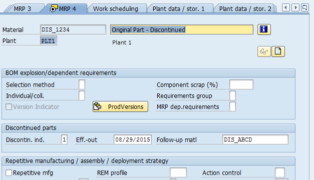
功能：在 MRP4 视图维护停产。Discontin.ind = 1 表示简单一对一停产（还有 3 表示从属并行停产）。Eff-out = 08/29/2015 是「原件库存应被用完」的计划日。Follow-up material = DIS_ABCD 指定替代料。这是停产在主数据上的最小三件套：标识 + 生效日 + 替代料号。
对应我司：正式 EOM 回写下游时，至少要带「停售生效日」和「建议替代 SKU」。GTM 已有迭代新品字段，可作 Follow-up 的业务来源，但不要在 GTM 里维护 MRP 视图片段。
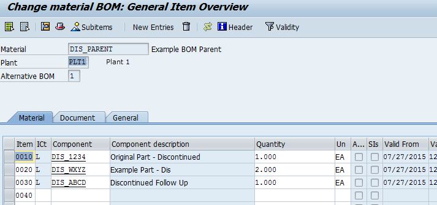
功能：父件 BOM 里同时挂着原件 DIS_1234、其他组件 DIS_WXYZ 和替代件 DIS_ABCD。只在物料主数据写 Follow-up 不够：替代料若不在 BOM 中，MRP 无法把依赖需求转到新件。这是「主数据停产」和「结构停产」必须一起维护的原因。
对应我司：成品 8 位 SKU 退市通常不改 BOM 结构；若涉及专用料停产，替代关系应在 PLM/金蝶 BOM，而不是 EOM 工单里画一张伪 BOM。
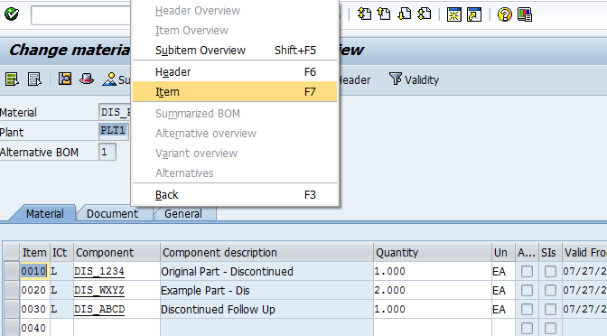
功能：停产数据不在 BOM 总览表上直接改，而在行项目里维护。选中原件或替代件行后，用 Goto → Item 打开该组件的详细数据，才能看到停产按钮。说明停产是「组件级」属性，不是整张 BOM 一个开关。
对应我司：EOM 范围也是 SKU 级（购物车已选清单），不是整 Model 强制齐套。和「停产落在行上」一致。
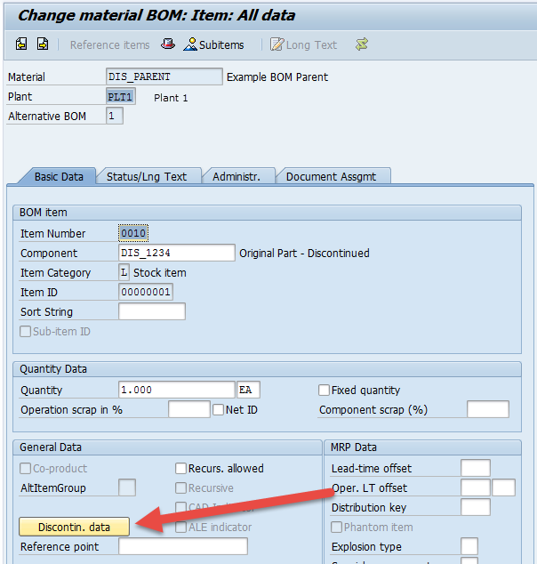
功能：行项目屏幕提供独立的 Discontin. data 按钮，弹出停产组/替代组维护窗。把「结构替代」从日常数量、损耗字段里拆出来，避免和普通 BOM 改料混在一起。
对应我司：反 EOM / 追加 Last Buy 也应是独立动作，不要和改预测、改清库方式挤在同一个无结构附件里。2.0 已按此拆流程。
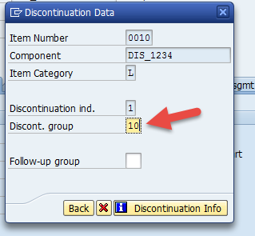
功能：原件行填写 Discontinuation ind = 1、Discont. group = 10。停产组用来在一张 BOM 里配对「谁被谁替换」：同一组号的替代行才会接走该原件的需求。没有组号，主数据里的 Follow-up 也可能对不上 BOM 结构。
对应我司：若未来打通专用料，需要「原料 + 替代料」成对维护。成品 SKU 用「迭代新品 SKU」一列即可，不必上组号。
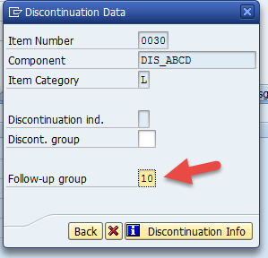
功能：替代件行不填停产标识，只填 Follow-up group = 10，与原件 Discont. group 相同。系统据此知道 DIS_ABCD 是 DIS_1234 的接替者。可点 Discontinuation Info 查看配对是否完整。
对应我司：新品 SKU 必须能反查「替代了哪个老品」，台账双向可跳。2.0 核料/方案已要求带出迭代关系。
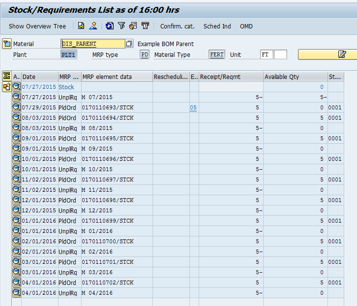
功能：父件成品仍按月出现独立需求（UnpRq）和计划订单（PldOrd），可用量为 0 时就补。停产不停止父件生产，只改变「用哪颗组件去满足父件」。这是 MRP 视角：EOM 的是组件，不是整机停产。
对应我司：成品 EOM 停的是该 8 位 SKU 的销售/采购，不是整条场景停产。父件继续要货时，组件替代才有意义——对应专用料路径，不是主清库路径。
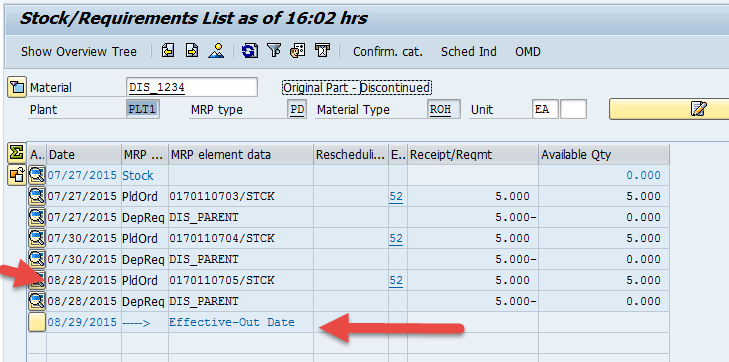
功能：库存需求清单里插入一行 Effective-Out Date 08/29/2015。生效日前仍有来自父件 DIS_PARENT 的依赖需求（DepReq）和计划订单。库存为 0 时，生效日之后不应再给原件规划新的补给，需求应转到替代料。生效日是可见的计划事件，不是隐藏备注。
对应我司：正式 EOM 日应能在计划/采购侧看见，而不是只存在于 GTM 工单。金蝶/APS 需要「生效日」字段，GTM 负责写出。
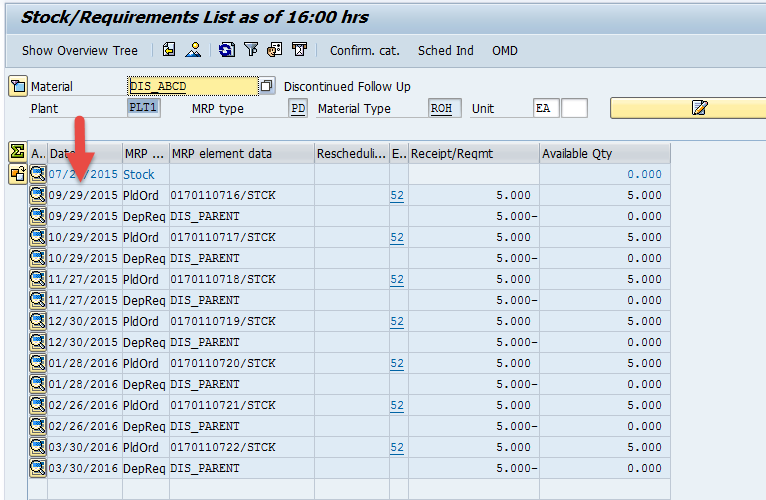
功能：原件库存为 0 的场景下，替代件从 2015-09-29 起出现父件依赖需求和计划订单（箭头标在当前日期行）。即：过了 Eff-out 且原件没货，MRP 把后续 DepReq 改挂在 Follow-up 上，并为替代件生成补给。
对应我司：老品断货后，需求应落到迭代新品预测/可售，而不是继续催老品 Last Buy。这与 2.0「新品衔接、避免老品提前断货又没新品」同一风险。
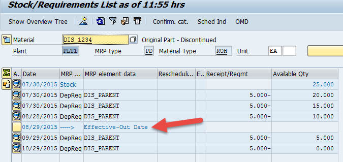
功能：同一生效日 08/29/2015，但原件现有库存 25。生效日后 09/29、10/29 的父件依赖需求仍挂在 DIS_1234 上，用来消耗现有库存，而不是立刻全部切到替代件。停产标识禁止的是「再买原件」，不是「再消耗原件」。
对应我司：正式 EOM 后允许出库清货、禁止普通新采购，与这张图完全同构。Last Buy 是例外补给，不是默认继续 MRP。
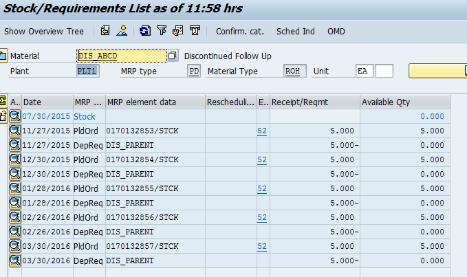
功能：在原件仍有 25 库存的配对场景中，替代件当前库存 0，且 11 月才开始出现 PldOrd / DepReq。系统按「先吃光老料，再启动新料补给」排程，避免双料同时采购造成呆滞。
对应我司：清库方案应避免「老品 Last Buy 与新品备货重叠」。核料若发现老品库存覆盖已足够，Last Buy 确认量应为 0。这与金蝶 ECN「用完旧料」、SAP「先耗尽再切替代」同一原则。
截图仅供内部方案对标，未获得厂商转载授权，请勿外发宣传。